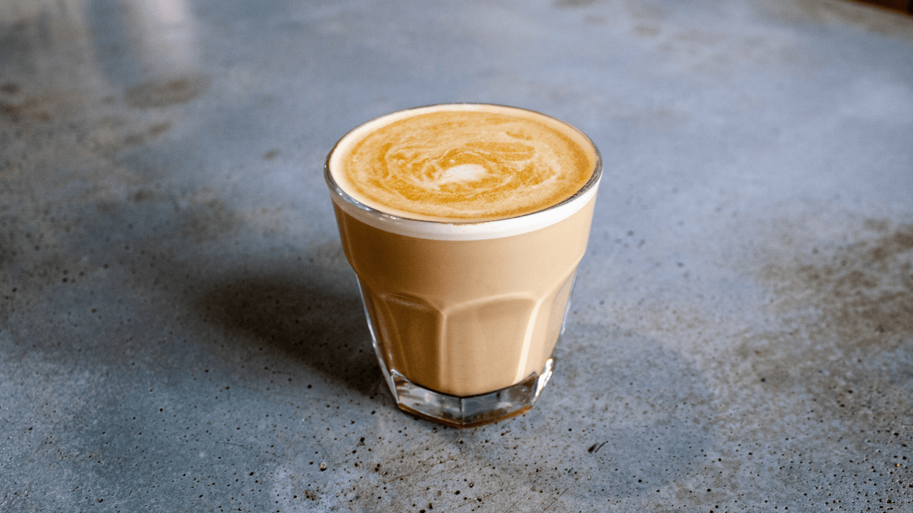
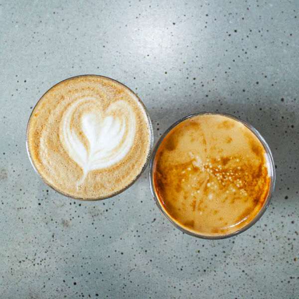
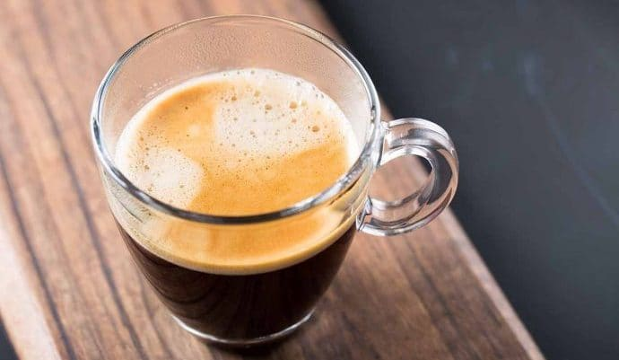

EspressoAn espresso shot can be served solo or used as the foundation of most coffee drinks, like lattes and macchiatos. $10 |

LatteA latte is a coffee figured up with espresso and steamed milk, topped with a thin layer of milk foam. $8 |
|

Flat WhiteA flat white is a coffee drink consisting of espresso with microfoam. $6 |

Caffe mochaA caffè mocha, also called mocaccino, is a chocolate-flavoured warm beverage that is a variant of a caffè latte, commonly served in a glass rather than a mug $5 |
|

AmericanoCaffè americano, also known as Americano or American, is a type of coffee drink prepared by diluting an espresso shot with hot water at a 1:3 to 1:4 ratio, resulting in a drink that retains the complex flavors of espresso, but in a lighter way $12 |
.jpg)
CortadoA cortado is a Spanish beverage consisting of espresso mixed with a roughly equal amount of warm milk to reduce the acidity, although the exact ratios have considerable regional variation. The milk in a cortado is steamed, but not frothy and "texturized" as in many Italian coffee drinks $7 |